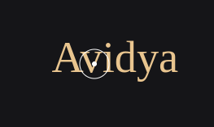
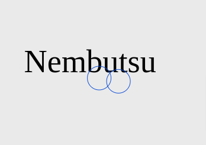
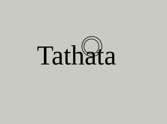
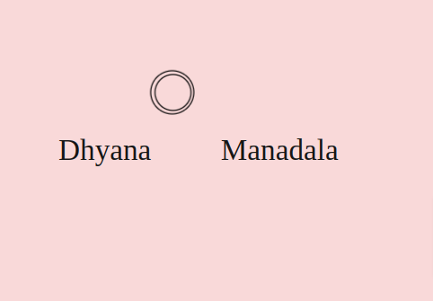
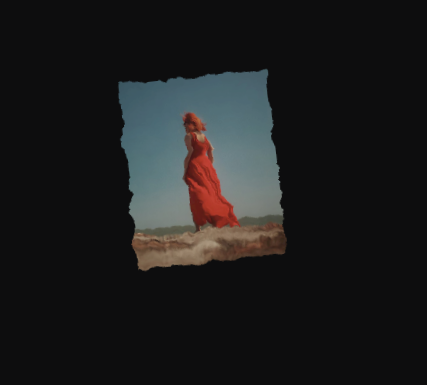
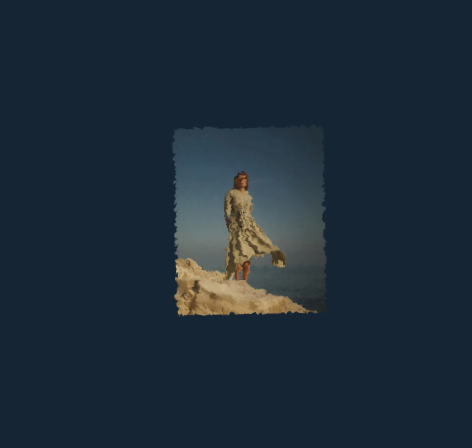
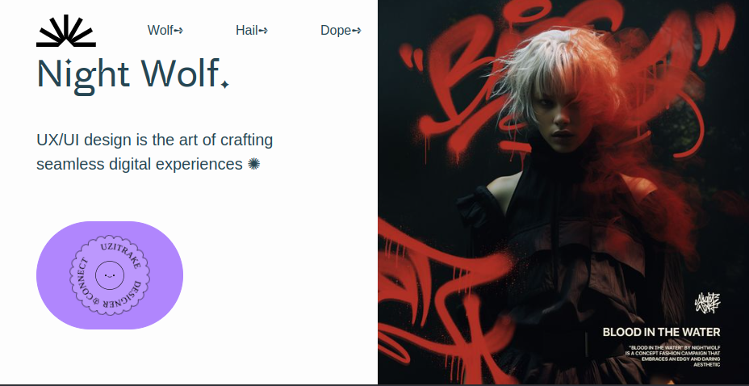

Cursor Effects Sketches
Github About PortfolioScroll Down
Design Odyssey
Welcome to a journey through an array of mesmerizing web sketches, each crafted to push the boundaries of interactive design.
Repetition Hover

Repetition HoverSquare

Hover Effect Rotated

Filter Effect

Motion Trail Opaque

Motion Trail Semi-transparent

Motion TrailRotation

Image Motion Circle

Motion Trail (Perspective)

Motion Trail Perspective

Custom Cursor filled circle

Cursortwo circles

Cursor filter effect

Cursor delayed motion
multiple circles Cursors

Mouse Follower
filled circle with filter effect

stroke cursorfilter effect

Custom Cursor filter and delay

Image Motion
Image Motion
SVG Filter

SVG FilterImage Motion
SVG Transition Vertical
SVG Path Horizontal

Vue designBackground/
Infinite Scrolling Loop

Loop Scrolling
Scrolling Animation
Infinite Loop ScaleY

Loop ScrollScale X & Y

Infinite 3D Loop
Thank you for joining us on this journey, and may these sketches ignite your imagination as you embark on your own digital creations.